IO421 Usage Notes
IO421 Usage Notes — Usage information about the I/O module
LVDT/RVDT basics
The linear variable differential transformer (LVDT) and rotary variable differential transformer (RVDT) are electromagnetic displacement transducers designed to provide output voltages proportional to linear and rotary displacement respectively.
The LVDT consists of an AC-excited primary coil and two identical secondary coils on a non-contacting magnetic core, as shown in the cutaway view in the figure below. The RVDT is, in principle, like the LVDT.
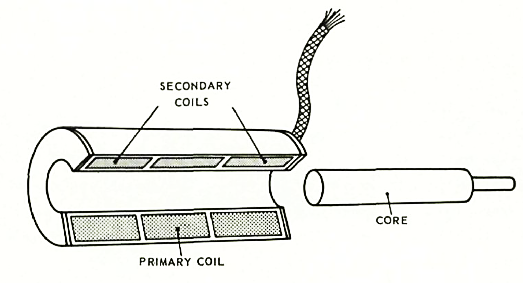
When the core is moved away from the center position, the mutual inductance of the primary coil with one secondary coil increases and with the other secondary coil decreases due to the change in the reluctance paths. The induced voltages are no longer equal and an output voltage appears.
LVDT/RVDT wiring
Concerning how the connections between both secondary coils are implemented, there are three possibilities.
For each of the output voltage graphics, the primary is excited with a sine-wave voltage that the frequency of which, depending on the design, may be from 47 [Hz] to over 10 [kHz]. As in any transformer, the output voltage is a function of the turns ratio and the coupling efficiency between the primary and secondary windings.
In 2-wire (or 4-wire, if the 2-wire of the primaries is counted) LVDT, where VLL = Va, the connection between the two secondaries is made within the transducer, and only a two-wire output is available. This configuration is seldom applied as it highly restricts the choice of further links in the measuring chain. Output voltage graphics:
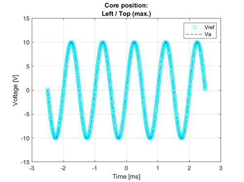
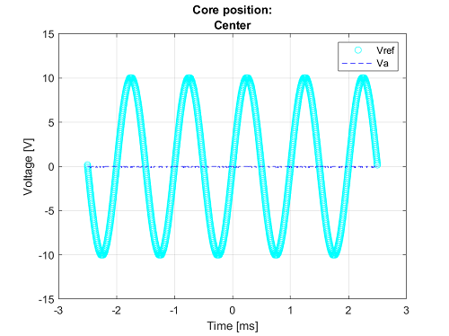
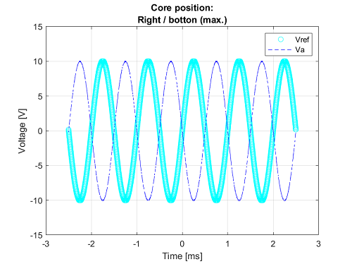
The configuration in 3-wire (or 5-wire, if the 2-wire of the primaries is counted and VLL = Vab) LVDT makes it possible to use special measuring systems that are based on the measurement of the difference between the two coil voltages. Such systems have certain advantages in some cases. Output voltage graphics:
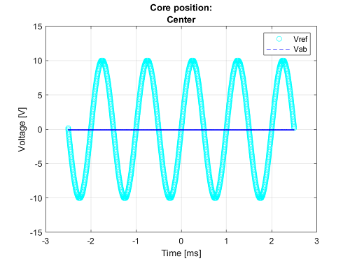
4-wire (or 6-wire, if the 2-wire of the primaries is counted, with VLL-a = Va and VLL-b = Vb) LVDT gives the universal configuration, where both secondary coils have two output connections. Output voltage graphics:
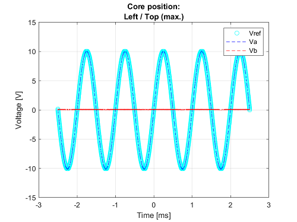
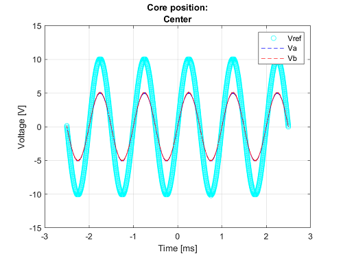
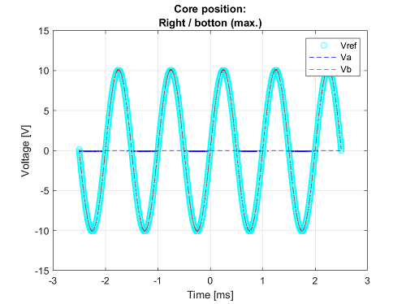
How to connect your device
This section describes connection methods for your measured or simulated LVDT/RVDT/Synchro/Resolver.
LVDT/RVDT measurement
When measuring an LVDT/RDVT with the IO421-1 submodule, the following connection methods can be used.
2-wire (primary as reference)
This connection method converts the widest range of LVDT/RVDT sensors and is the most sensitive to excitation voltage variations, temperature and phase shift effects.
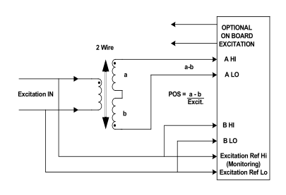
3-wire (derived reference)
In this connection method, excitation is on the primary side (as with the 2-wire method) but the converter reference is the sum of A + B, which has a constant amplitude for changing core displacement. This system is not sensitive to temperature effects, phase shifts, or oscillator instability. To use this method, the driver is configured in 4-wire mode and the A LO and B LO inputs are connected together.
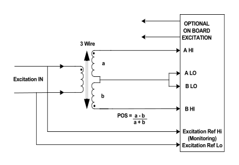
4-wire (derived reference)
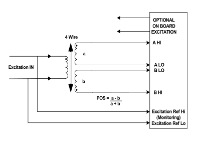
LVDT/RVDT simulation
When simulating an LVDT/RVDT with the IO421-3 submodule, the following connection methods can be used. In all connections, the primary is excited with a sine-wave voltage.
4-wire LVDT
The default configuration is the 4-wire LVDT/RVDT:
If the position of the rod reaches the top in the below diagram (at Va), then Va outputs a sine wave with the same frequency as the reference voltage. The amplitude is a function of the turn ratio and the coupling efficiency between the primary and secondary windings. The Vb output is almost zero.
If the position of the rod reaches the bottom, then Vb outputs a sine wave with the same frequency as the reference voltage. The amplitude is a function of the turn ratio and the coupling efficiency between the primary and secondary windings. The Va output is almost zero.
If the rod is in the center, Va and Vb are equal.
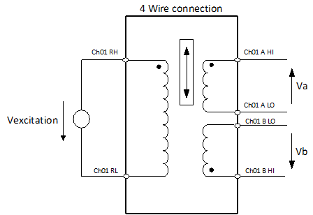
3-wire LVDT
To simulate a 3-wire LVDT/RVDT, connect the A LO and B LO pins as shown below:
If the position of the rod reaches the top in the below diagram, then Vab outputs a sine wave with the same frequency as the reference voltage. The amplitude is a function of the turn ratio and the coupling efficiency between the primary and secondary windings.
If the position of the rod reaches the bottom, then Va outputs a sine wave 180° out of phase compared with the reference voltage. The amplitude is a function of the turn ratio and the coupling efficiency between the primary and secondary windings.
If the rod is in the center, Vab is almost zero.
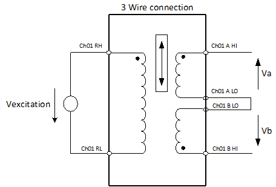
2-wire LVDT
To simulate a 2-wire LVDT/RVDT, use A HI and A LO pins only:
If the position of the rod reaches the top in the below diagram, then Va outputs a sine wave with the same frequency as the reference voltage. The amplitude is a function of the turn ratio and the coupling efficiency between the primary and secondary windings.
If the position of the rod reaches the bottom, then Va outputs a sine wave 180° out of phase compared with the reference voltage. The amplitude is a function of the turn ratio and the coupling efficiency between the primary and secondary windings.
If the rod is in the center, Va is almost zero.
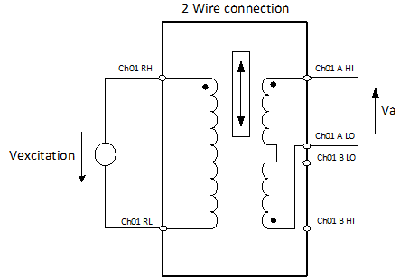
![[Note]](images/note.png) | Note |
|---|---|
The phase lock between the excitation and the signal output can take up to 1 second after connecting a valid excitation signal or starting the model. Consequently, no signals are immediately present at the output. |
Synchro/Resolver
Synchros and resolvers are essentially transformers. They have a primary winding and multiple secondary windings, and like a transformer, their primary winding is driven by an AC signal. Synchros and resolvers are very similar; however, there are some differences. As shown in Figure 1, a synchro has:
1 primary winding
3 secondary windings, where each one is mechanically oriented 120º apart
In contrast, as shown in Figure 2, a resolver has:
1 primary winding
2 secondary windings, which are oriented at 90º in relation to each other
Electrical representation of a Synchro:
Connect the excitation (VREF) to the Rotor (marked with an R, where R1 = RH and R2 = RL).
Connect the signal (VLL) to the Stator (marked with an S). The phase between the stator windings is 120º.
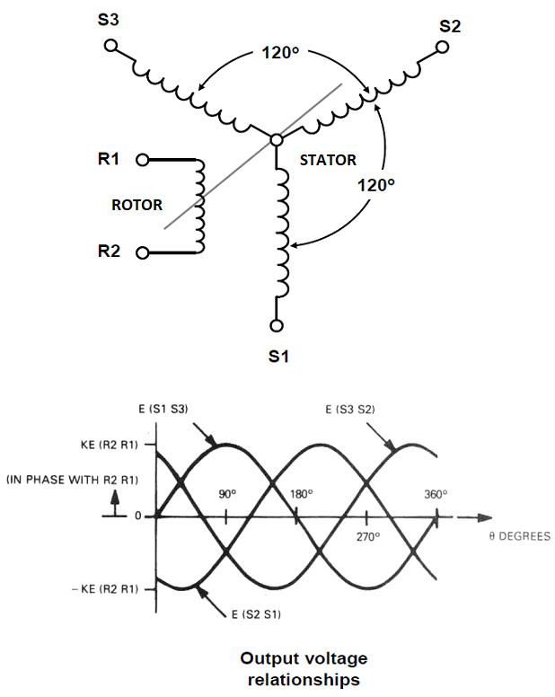
Figure 1
Electrical representation of a Resolver:
Connect the excitation (VREF) to the Rotor (marked with an R, where R2 = RH and R4 = RL).
Connect the signal (VLL) to the Stator (marked with an S). The phase between the stator windings is 90º.
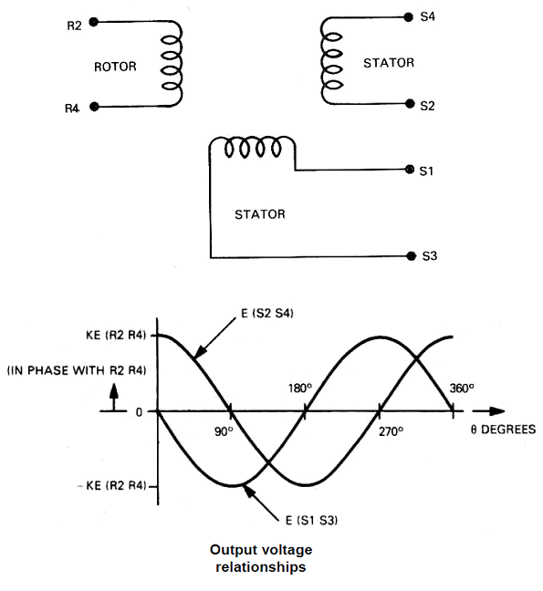
Figure 2
While a synchro and resolver are electrically very similar to a transformer, they are mechanically more like a motor. The primary winding in a synchro or resolver can be physically rotated in relation to the secondary windings. For this reason, the primary winding is called the "rotor"; the secondary windings (which are fixed) are called "stators."
Synchros and resolvers are often used to track the rotary output angle of a closed-loop system, which uses feedback to achieve accuracy and repeatability. A synchro/resolver can be turned continuously and, since its secondary winding outputs are analog signals, it provides "infinite" resolution output. As the shaft of a synchro transmitter is turned, the angular position of its rotor winding changes in relation to its secondary (stator) windings. The relative amplitude of the resulting AC output signals from the secondary (stator) windings indicates the rotary position of the transmitter’s shaft.
Two-speed configuration: For better resolution, you can use one channel as "coarse" and the other channel as "fine" dial.
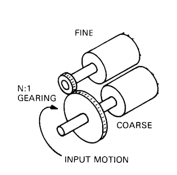
| Note |
|---|---|
The phase lock between the excitation and the signal output can take up to 1 second after connecting a valid excitation signal or starting the model; consequently, no signals are immediately present at the output. |